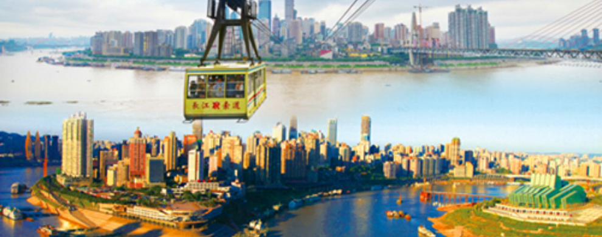
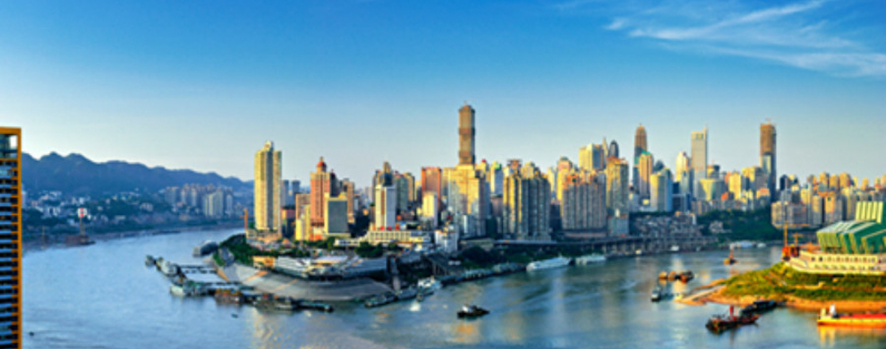
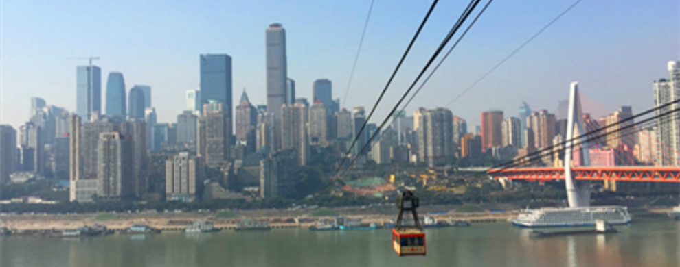
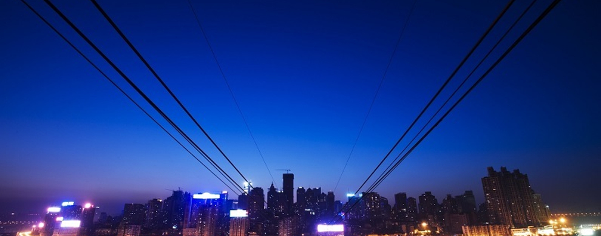

特色1：日观山城，夜瞰灯海，不坐索道，白来重庆。
重庆地处两江交汇处，城在山中，山在水中，水中有山、山中有城，既是“江城”，又是“山城”，更以“不夜城”惊艳四海。长江索道景区浓缩了“江城、山城、不夜城”的精华：春夏之际，渝中半岛，霞光辉映，凌空飞渡，一片孤城万仞山；秋冬雨后，山城重庆，若隐若现，御风而行，游雾缭绕似仙境；夜幕垂落，华灯闪烁，临风赏景，飞渡星河之上，行游灯火之巅。随着城市天际线及空间景观层次变幻，犹如观看一部动感十足的3D版城市电影。

特色2：重庆城市符号，浪漫、文艺、风情、生动、立体的重庆旅游方式。
重庆长江索道全长1166米，时速每秒6米，最大载客量80人，旅游载客量60人，单程运行4分30秒，是山城上空单曲循环了30年的一首经典老歌。它记忆着重庆人的生活，记录着重庆城的历史，闪耀着重庆特色，彰显着重庆骄傲，成为繁华都市的乡愁守望者和城市文脉的见证者、记录者、延续者、传承者，2009年被列为重庆市文物保护单位。

特色3：国家AAAA景区，重庆都市旅游空中观光景区，网红景区，打卡圣地。
国家AAAA级旅游景区-重庆长江索道，由“城史文化区、空中观光区、影视文化区”三部分组成，凭借独特旅游资源优势，以及浪漫、文艺、风情、生动、立体而重庆的游览方式，长江索道不仅赢得了“日光山城，夜瞰灯海；不坐索道，白来重庆“的美赞，更赢得了“重庆网红景区”和“山城打卡圣地”的美誉，年游客接待量达400万人次。

特色4：穿梭高楼大厦之间、飞渡浩瀚大江之上、行游山水都市之巅，解读山城外形，体验重庆特色，享受“飞越山城，征服重庆”的豪情之美。
作为重庆城市符号，长江索道还是现代影视剧在重庆拍摄的热门取景地，曾拍摄过巩俐、孙红雷主演的《周渔的火车》；黄渤、徐铮主演的《疯狂的石头》；林志玲、刘烨主演的《北京纽约》；邓超、柳岩等主演的《从你的全世界路过》等十余部影片，以及黄渤、孙红雷、黄磊、王迅、张艺兴等拍摄的《极限挑战》等明星真人秀节目。